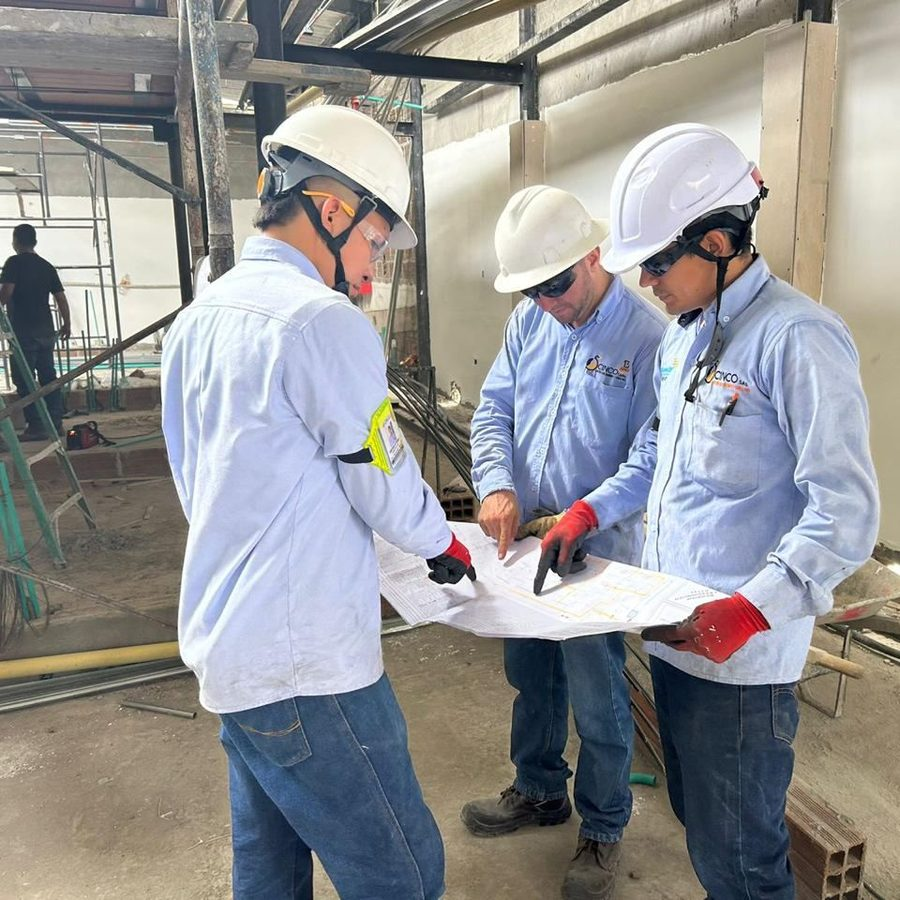

Con más de años ejerciendo interventoría y supervisión de contratos del sector eléctrico, en Cinco S.A.S. construimos Interventoría PRO para que cada obligación del contrato tenga quién la controle, cómo se controla y con qué evidencia.

Planillas, pólizas, actas, fotos y listas de personal repartidas entre correos, carpetas y celulares.
Una póliza, un examen ocupacional o un plazo de respuesta se descubren vencidos cuando ya hay incumplimiento.
Cada cierre de mes se vuelve a copiar, sumar y diagramar lo que ya se había registrado.
Cuando hay una diferencia con el contratista, cuesta demostrar quién registró qué y cuándo.
Ve todos los contratos en un tablero con su semáforo de riesgo, define los equipos y recibe los avisos de la interventoría.
Registran y verifican la información de sus contratos y generan el informe mensual.
Toma fotos, inspecciones y novedades desde el celular, en el mismo momento en que ocurren.
Recibe informes completos, consistentes y con soporte, mes a mes.
💼 ¿Varios contratos al tiempo? Cada uno es independiente y se cambia de uno a otro sin volver a iniciar sesión.
* Panel ilustrativo — las alertas se calculan solas con lo registrado en cada módulo, y la interventoría decide cuándo enviarlas por correo al gestor.
En la obra se toma la foto o se registra la inspección desde el celular.
Si no hay señal, queda guardado en el teléfono: no se pierde.
Al volver la señal se sube solo, al contrato elegido y con su fecha.
Lo que se registra en campo alimenta de inmediato las alertas, el tablero y el informe mensual.
Al cierre del mes se elige el periodo, se marcan las secciones a incluir y el informe sale en PDF (portada clara u oscura) o en Word para los ajustes finales.
"Lo que se registra hoy en la obra ya está en el informe del mes."
— Así se trabaja la interventoría con Interventoría PRO
Cada persona ve solo sus contratos; solo el gestor puede eliminar registros.
Cada creación, edición o eliminación queda registrada y no se puede modificar.
Infraestructura sobre Google Firebase, con acceso desde la oficina o desde la obra.
Diseñado por el equipo de Cinco S.A.S. a partir de su propia práctica de interventoría.
Te mostramos cómo se vería el seguimiento de tu contrato en Interventoría PRO.